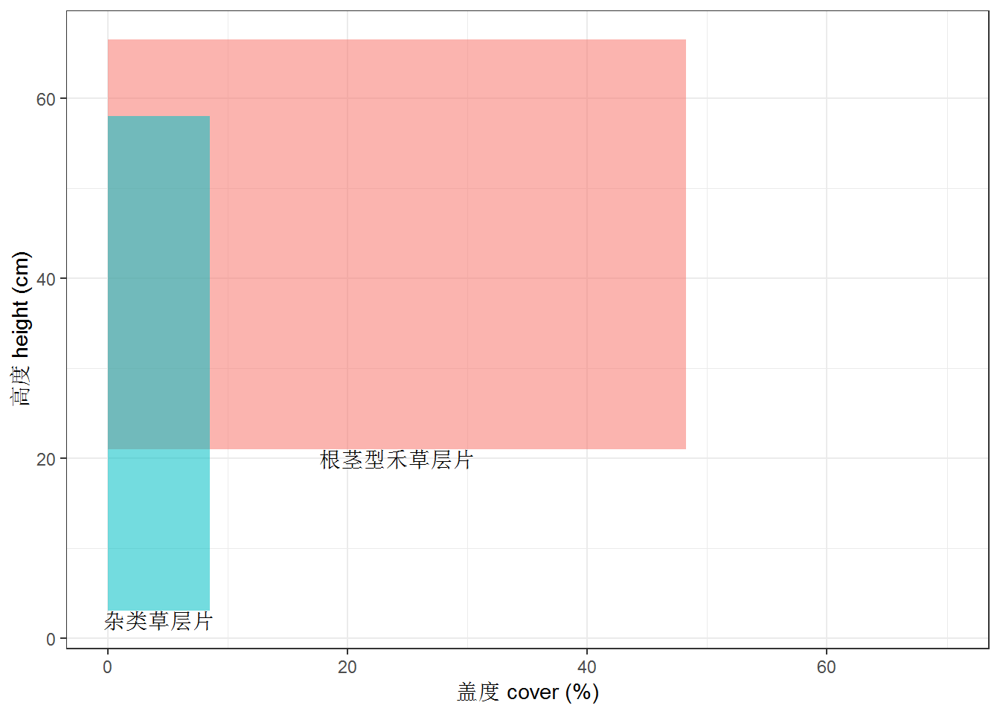
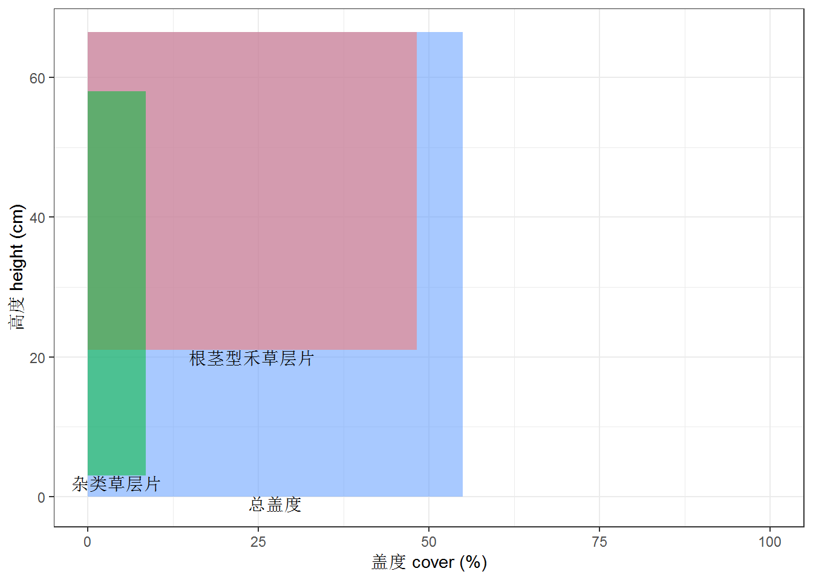

6 群从划分
6.1 按照排位IV
- 原始数据，仅仅按照重要值确定群从和群从组名称，获得每个样地的群从名。i的大小是指，大于i的重要值进入群从命名。
- %>%zwqcz()，可能会出错。因为i的大小设为0.1时，样方内仅有一个物种满足要求。
QCNAME(com,cp,i=0.1)%>%zwqc()| qc | ld | site |
|---|---|---|
| 羊草-克氏针茅群从组 | Ass. Leymus chinensis-Sibbaldia adpressa | 1 |
| 羊草-芨芨草群从组 | Ass. Leymus chinensis-Achnatherum splendens | 2 |
6.2 按照累积IV
群落划分的基础数据，n为每一层片最多描述的物种数，iv为层片临界值，大于iv的层片的优势种，命名时添加至群从名 基础数据
cs<-QLYF(com,cp,n=5,iv=0.1)如果基础数据包括盖度信息，可根据盖度进行层片决策
cs<-QLYF2(com,cp,herb,n=5,cover=10)6.3 群从划分表
QCTABLE2(cs,out='table')| 群从组 | 群从 |
|---|---|
| Ⅰ.克氏针茅-根茎型禾草群从组 | Ⅰ-1克氏针茅-羊草-冷蒿群从 |
| Ⅱ.羊草-丛生禾草群从组 | Ⅱ-1羊草-芨芨草-银灰旋花-多根葱群从 |
6.4 群从名,写出群从的中文名，拉丁名，和所含样地号
QCTABLE2(cs,out='mm')## [1] "Ⅰ-1 克氏针茅-羊草-冷蒿群从 Ass. Sibbaldia adpressa-Leymus chinensis-Artemisia frigida (1)"
## [2] "Ⅱ-1 羊草-芨芨草-银灰旋花-多根葱群从 Ass. Leymus chinensis-Achnatherum splendens-Convolvulus ammannii-Allium senescens (2)"6.5 按群从组统计数量特征
MS_QCZ(plantcom$comm,cs)| 群从组 | 样地数 | 群从数 | 共记载物种数 | 每平方米物种饱和度 | 平均物种数 | 每平方米群落总盖度 | 平均盖度 | 每平方米群落生物量 | 平均生物量 |
|---|---|---|---|---|---|---|---|---|---|
| 克氏针茅-根茎型禾草群从组 | 1 | 1 | 26 | 11 ~ 21 | 16 | 17 ~ 21 | 19.30 | 54.21 ~ 87.82 | 73.46 |
| 羊草-丛生禾草群从组 | 1 | 1 | 9 | 3 ~ 6 | 5 | 22 ~ 25 | 23.64 | 35.3 ~ 53.97 | 41.98 |
6.6 群从组的物种组成，返回list
其结果，可以用区系分析的相关函数，进行科属组成、生活型、和区系地理成分分析
QCZSP(plantcom$comm,cs,sp)6.7 按群从统计数量特征
MS_QC(plantcom$comm,cs)| 群从 | 共记载物种数 | 每平方米物种饱和度 | 平均物种数 | 每平方米群落总盖度 | 平均盖度 | 每平方米群落生物量 | 平均生物量 | |
|---|---|---|---|---|---|---|---|---|
| 克氏针茅-羊草-冷蒿群从 | 克氏针茅-羊草-冷蒿群从 | 26 | 11 ~ 21 | 16 | 17 ~ 21 | 19.30 | 54.21 ~ 87.82 | 73.46 |
| 羊草-芨芨草-银灰旋花-多根葱群从 | 羊草-芨芨草-银灰旋花-多根葱群从 | 9 | 3 ~ 6 | 5 | 22 ~ 25 | 23.64 | 35.3 ~ 53.97 | 41.98 |
6.7.1 群落结构分层图解
- 以样方为单位 如果原始数据包含盖度信息，可以对每个群从进行群落分层图解，cover表示大于此盖度都限制，su是控制x轴最大 值，默认100
data(yc)
cp2<-NMLIST(yc)%>%CPHF()
f<-fc(yc,cp2)
f1<-subset(f,site==1)
fcplot(f1,cover=5,su=70)
包含总盖度
f_<-fc2(yc,cp2)
f_1<-subset(f_,site==1)
fcplot(f_1,cover=5)
6.8 群从物种组成描述
- 仅包含层片累积重要值、优势种、和主要组成部分
- 是按照样方排列
CPMS(cs,by="cp")| . |
|---|
| 杂类草层片，累计重要值为0.389，记有14种，优势种为克氏针茅，重要值为0.132，还有阿尔泰狗娃花、双齿葱、银灰旋花、狼毒等;根茎型禾草层片，累计重要值为0.278，仅优势种为羊草，重要值为0.278;半灌木层片，累计重要值为0.102，记有2种，优势种为冷蒿，重要值为0.098，还有百里香等 |
| 根茎型禾草层片，累计重要值为0.477，仅优势种为羊草，重要值为0.477;丛生禾草层片，累计重要值为0.171，仅优势种为芨芨草，重要值为0.171;杂类草层片，累计重要值为0.149，记有3种，优势种为银灰旋花，重要值为0.087，还有大萼委陵菜、皱黄芪等;葱类植物层片，累计重要值为0.134，记有2种，优势种为多根葱，重要值为0.084，还有细叶葱等 |
CPMS(cs,by="zw")| . |
|---|
| 葱类植物，累计重要值为0.081，记有3种，有细叶葱、蒙古韭、山韭;一二年生草本，累计重要值为0.08，记有4种，有猪毛蒿、刺沙蓬、角蒿、平车前;丛生小禾草，累计重要值为0.07，记有2种，有糙隐子草、冰草 |
| 一二年生草本，累计重要值为0.044，仅有栉叶蒿;丛生小禾草，累计重要值为0.025，仅有寸草苔 |
- 如果要在层片描述内加入层片高度和盖度
ccs<-QLYF(HERBIV(yc),cp2,n=5,iv=0.1)## Warning: attributes are not identical across measure variables; they will
## be droppedms_cs<-CS2(f,ccs) # 生成具有层片高度和盖度的描述信息表
CPMS(ms_cs,by="cp2")| . |
|---|
| 根茎型禾草层片，累计重要值为0.654，记有3种，平均高度43.64cm，盖度48.27%，优势种为羊草，重要值为0.616，还有芦苇、拂子茅等;杂类草层片，累计重要值为0.176，记有9种，平均高度21.68cm，盖度8.53%，优势种为野艾蒿，重要值为0.04，还有马蔺、针灯心草、蒲公英、车前等 |
| 根茎型禾草层片，累计重要值为0.654，记有3种，平均高度43.64cm，盖度48.27%，优势种为羊草，重要值为0.616，还有芦苇、拂子茅等;杂类草层片，累计重要值为0.176，记有9种，平均高度21.68cm，盖度8.53%，优势种为野艾蒿，重要值为0.04，还有马蔺、针灯心草、蒲公英、车前等 |